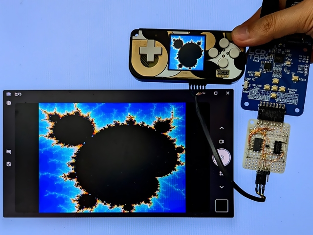
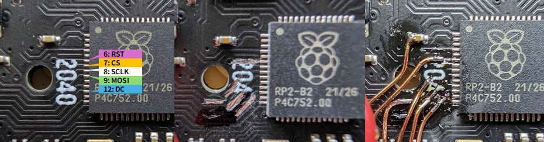

Capturing Screen of PicoSystem

Using LcdTap-Pico2 Universal
External Deserializer is Required
The PicoSystem’s SPI is too fast for the LcdTap’s 4-Line SPI interface, so an external deserializer is required.
Connection
To access the SPI bus on PicoSystem, you need to scrape off the solder resist on the board and solder the wires.

Configuration
Load preset for PicoSystem.